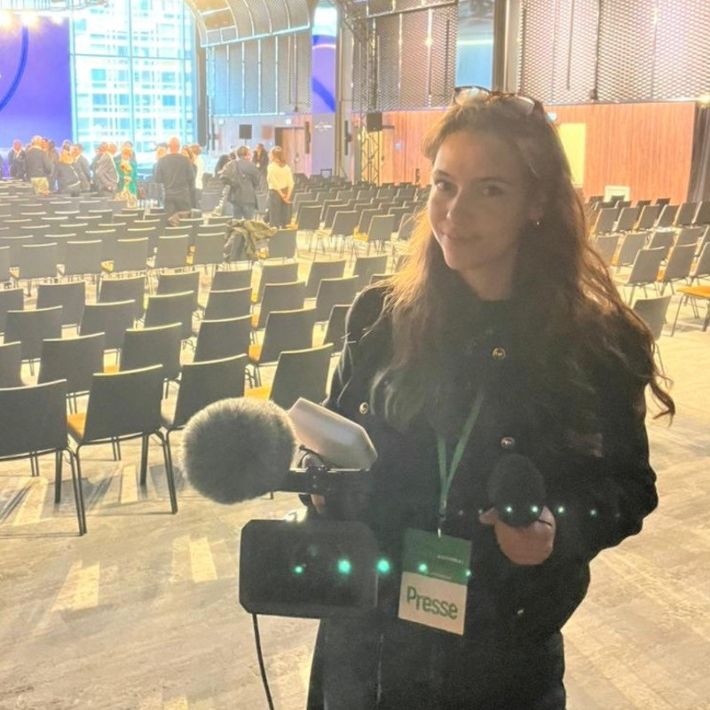
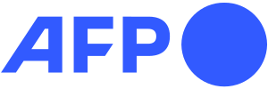

Journaliste vidéo et web · Paris
Océane Bourdenet
Enquêtes en sources ouvertes, reportages et témoignages pour les réseaux sociaux, entre Paris, Beyrouth et la Martinique.

J'ai travaillé pour

Publications phares
Une sélection de vidéos et d'articles. Je réalise mes vidéos de A à Z : sujet, script, tournage, montage et motion design.
De l'idée à la publication
en passant par le tournage et le montage
Sur chaque sujet, je fais tout, seule ou avec la rédaction.
Le sujet et l'angle
Je repère ce qui circule en ligne et sur le terrain, et je cherche ce qui n'a pas encore été raconté.
Les recherches
Sources ouvertes, images satellites, données : je vérifie avant d'écrire.
OSINTLe script
J'écris un récit court, pensé pour le format vertical et un visionnage sans le son.
Les sources
Je contacte les personnes à interroger et je prépare les entretiens.
Le tournage
Caméra ou smartphone selon le terrain, prise de son comprise.
Sony α7 · Panasonic GH5 · kit Mojo · droneLe montage
Rythme, sous-titres, habillage.
Premiere ProLe motion design
Cartes, chiffres et titres animés.
After EffectsLa publication
Une version par plateforme, avec un titre, une légende et des mots-clés pensés pour le référencement.
SEO · Instagram · TikTok · YouTube · WordPress
En chiffres
- + vues cumulées sur Instagram
- + j'aime cumulés sur Instagram
- ans d'expérience en rédaction
- 4rédactions, en France, au Liban et en Égypte
Chiffres publics relevés en octobre 2026, uniquement pour les publications où l'affichage est activé.
Parcours en bref
Compétences clés
- OSINT et vérification
- Tournage α7 · GH5
- Montage Premiere Pro
- Motion design After Effects
- Référencement SEO
- Journalisme mobile
- Drone A1/A3
- Data viz Flourish
Langues
- Anglais C1
- Arabe classique B1
- Arabe libanais A2
Contact
Pour un poste, une pige ou une proposition de sujet, écrivez-moi avec ce formulaire. Je réponds sous quelques jours.